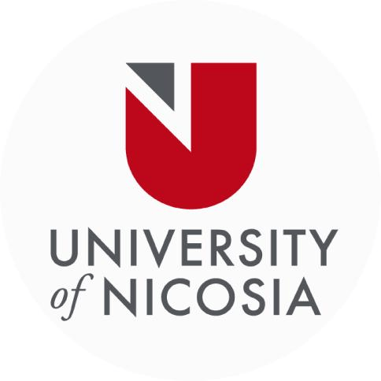
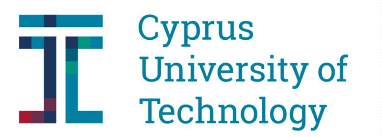
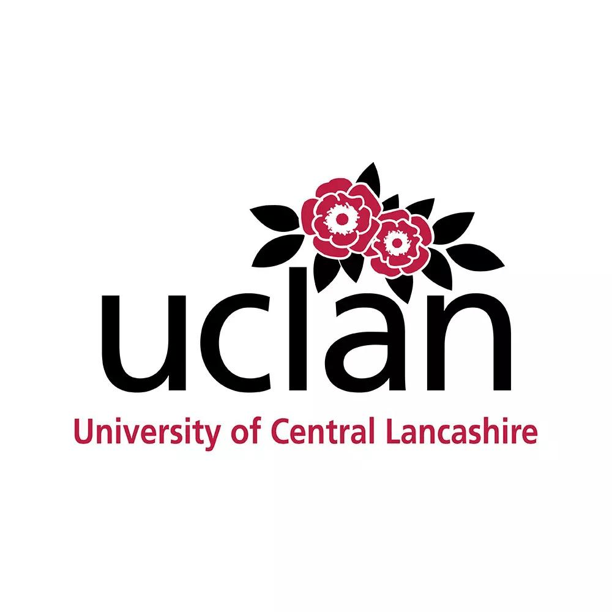

Georgios P. Georgiou
- Experimental phonetics/phonology
- Second language acquisition
- Speech-language disorders
- Machine learning
- Artificial intelligence
Drawing on linguistics, artificial intelligence, education, cognitive science, and neurology, my research explores how speech and language can be analyzed and computationally modeled to advance second language acquisition research and support the assessment of neurological conditions.
The first strand of my research focuses on developing predictive frameworks to characterize second language speech and optimize learning outcomes. The second strand leverages machine learning and interpretable modeling to identify speech- and language-based markers of neurodevelopmental and neurodegenerative conditions, facilitating their automatic detection, assessment, and monitoring. Through these complementary research strands, I aim to generate scientific insights that inform evidence-based educational and clinical practice.
Academic Appointments


